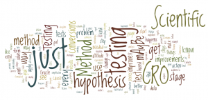
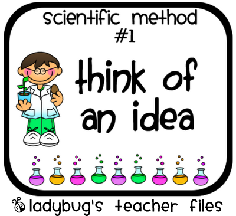

The Scientific Method
The scientific method is a process of discovering things about our world. Scientists use this process to learn new things. Howstuffworks presents a 12 page article explaining the scientific method.
When you review articles on the scientific method you discover that the steps are not always the same. As you look closer they really mean about the same thing and are just presented using different words. Here is a list of the steps of the scientific method that reflects the general process.
Steps of the Scientific Method
- Observation/Question
- Hypothesis
- Prediction
- Testing through experimentation
- Draw a conclusion
- Refine and Repeat
Testing the Hypothesis
One of the important details is that the hypothesis must something that can be tested. Without the ability to test the hypothesis there is no way to draw a firm conclusion. This requirement makes it so some ideas never become theories.
The process can be meaningful when the hypothesis is proven to be wrong as well as when it is proven to be right. In either case something can be learned.
Plant Growth in Soils with Different PH Values
| Plant Group | pH of Soil | Average Growth |
|---|---|---|
| 1 | 6.0 | 25.4 |
| 2 | 6.2 | 33.0 |
| 3 | 6.4 | 50.8 |
| 4 | 6.6 | 53.3 |
| 5 | 6.8 | 53.3 |
| 6 | 7.0 | 30.5 |
| 7 | 7.2 | 22.9 |
Kids and the Scientific Method
Kids can learn about the scientific method in many fun ways. Here is a site that has many experiments for kids.
Testable
One of the important details is that the hypothesis must something that can be tested. Without the ability to test the hypothesis there is no way to draw a firm conclusion. This requirement makes it so some ideas never become theories.